Contents
- Autorotation curve
- Computing flight path angle for ideal autorotation
- Plot power states
- Compute vertical descend power curve
- Computing ideal autorotation power states
- Parametric autorotation power states
- Computing horizontal velocity for maximum vertical velocity
- An alternative to compute autorotation power states
- Remarks
- References
Autorotation curve
This demo shows how to use energy functions to understand how to obtain the autorotation curve of an helicopter. The autorotation curve represents the vertical velocity of an helicopter as a function of the horizontal velocity when power plant is not providing power to the main rotor. This kind of autorotation is called ideal autorotation because actual autorotation flight condition requires an additional supply of power to the main rotor just to keep yaw authority and basic instrumentation information.
close all
setPlot;
First we setup heroes environment by defining an ISA+0 atmosphere and a SuperPuma helicopter and the variable atm stores the atmosphere and he stores the helicopter
atm = getISA; he = superPuma(atm);
this part of the code perhaps it is better to not be published it until we fix the conflict between @Cuerva induced velocity model and kappa power factor correction. Therefore, we set kappa equal to 1.0 and this is important to avoid problems using induced velocity equation at descend flight
he.mainRotor.kappa = 1.0;
First, this demo computes three main power curves of the helicopter corresponding to the following sea level flight conditions:
- power curve for horizontal flight, i.e. gammaT = 0
- power curve for vertical descend flight, i.e. gammaT = -pi/2
- power curve for which there exists just one and only one velocity of zero power. The angle between helicopter velocity and horizontal reference for this condition receives the name of minimum angle for autorrotation, i.e. gammaT = gTmin
A power curve is a vector of power states and each power state is in fact the solution set of the energy method presented elsewhere, see for instance [1]. Before computing power states and once helicopter and atmosphere are defined,flight conditions should be defined to access energy performance functions.
heroes Toolbox provides the function getFlightCondition to specify energy flight conditions. Before constructing flight conditions, the main flight condition parameters are set. First, some flight condition parameters are defined by specifying the helicopter gross weight, GW, of 73550 N, a fuel mass, FM, of 1600 kg, a nominal rotor speed, OmegaN, flight altitude corresponding to sea level, hsl
GW = 73550; FM = 1600; OmegaN = he.mainRotor.Omega; hsl = 0.;
Now, a vector of flight conditions is defined by specifying 51 horizontal helicopter velocities between 0 to 250 m/s and the corresponding flight condition parameters are set to vectors of size 51x1 as follows. We define an helicopter rotor speed equals to nominal rotor speed, a gross weight of 73000 N, fuel mass of 1600 kg and sea level flight altitude.
nv = 51; V = linspace(0,250,nv)'; Omega = OmegaN*ones(nv,1); W = GW*ones(nv,1); Mf = FM*ones(nv,1); H = hsl*zeros(nv,1);
To build up the flight condition we use the getFlightCondition function getFlightCondition requires as first argument helicopter and a number variable inputs can be specified always in the standard matlab way of pairs string-value. For this particular case we specify the above variables and because the flight path angle, gammaT, is not specified as input argument getFlightConition sets it to 0. In this way we are defining 51 flight conditions corresponding to a level horizontal flight.
fc0 = getFlightCondition(he,... 'V',V,'H',H,'GW',W,... 'Omega',Omega,'Mf',Mf);
Once the energy-based helicopter, ISA atmosphere and flight condition are established, heroes toolbox provides getEpowerState to obtain the power state corresponding to the helicopter, he, flying the flight condition, fc0, at the atmosphere, atm, as follows
ps0 = getEpowerState(he,fc0,atm);
The power state structure, ps0, stores the solution of the energy method for the flight condition defined by fc0, that is for each horizontal velocity the power and induced velocity are calculated together with other post processed data such as induced power, tail rotor power, available power, etc.
Computing flight path angle for ideal autorotation
Now to analyse an autorotation condition first we are going to compute the flight path angle gammaT for ideal autorotation, that is, the flight path angle required to obtain a power state for which the main rotor power is zero. To compute such an angle heroes toolbox provides the function gammaT2autorrotation . Before using this function we define the corresponding scalar flight condition and then we obtain the flight path angle for autorotation as
fC0 = getFlightCondition(he,... 'H',hsl,'GW',GW,... 'Omega',OmegaN,'Mf',FM); [gTmin,vgTmin,PgTmin] ... = gammaT2autorrotation(he,fC0,atm,... 'inducedVelocity',@Cuerva);
gammaT2autorrotation outputs three varialbes. These variables are gTmin, the flight path angle for autorotation, vgTmin, the velocity modulus for which power is zero and PgTmin the power for this condition. We have used an induced velocity model which is a valid correction of the Momentum theory for descend flight such as @Cuerva.
Before proceeding further a small check can be done by computing the power state corresponding to this flight condition and check that power is PgTmin. First we define the flight condition for this flight path angle and velovity modulus, then compute the power state as follows and finally, we compute the error between both quantities which should be equal to zero
fc1 = getFlightCondition(he,... 'gammaT',gTmin,'V',vgTmin,'H',hsl,'GW',GW,... 'Omega',OmegaN,'Mf',FM); ps1 = getEpowerState(he,fc1,atm,... 'inducedVelocity',@Cuerva); err1 = abs(ps1.P - PgTmin)
err1 =
0
To compute the power curve corresponding to the condition of flight path angle equal to gTmin we define a vector flight condition for several velocity moduli. To obtain the corresponding vector power state we use as before getEpowerState where it should be emphasized that the default induced velocity model, @Glauert, is overriden, as before, by selecting @Cuerva induced velocity model.
gT_min = gTmin*ones(nv,1); fc_gTmin = getFlightCondition(he,... 'gammaT',gT_min,'V',V,'H',H,'GW',W,... 'Omega',Omega,'Mf',Mf); ps_gTmin = getEpowerState(he,fc_gTmin,atm,... 'inducedVelocity',@Cuerva);
Plot power states
To plot the previous power states we require first to define the variables to plot and the legends of the series. For this task heroes toolbox uses the function getaxds. Function getaxds requires three input arguments: the string to define the fieldname of the variable, the label to be used as axis label and the float number to scale axes data.
The variable for x axis is the horizontal velocity 'Vh', the latex label, '$V_h$ [m/s]' and the data is not scaled, that is the scale factor is one. The y axis is the power and the corresponding axis data structure is defined by the fieldname 'P', the latex label, '$P$ [W]', and the scale factor of 1. Because the dependent axis, y, can be a set of variables a cell should be input, contrary to the case of the x axis. Note that label strings are always latexfied because by default once setHeroesPath has been executed the default latex interpreter is LaTeX instead of TeX. Then, both the x and y axes of the plot are set as follows
axds = getaxds('Vh','$V_h$ [m/s]',1); azds = getaxds({'P'},{'$P$ [W]'},1);
Finally to completely define the plot information two meaningful legends are defined as follows and they are stored as a cell.
l1 = '$\gamma_T = 0$'; l2 = strcat('$\gamma_T$ = ',... num2str(gTmin*180/pi,'%3.1f'),'$^o$'); leg = {l1,l2};
Heroes toolbox provides the function plotPowerState to deal with the task of plotting power states. The input arguments of plotPowerState are the power state, x axis data structure, legends and as an optional argument the y axis variables because we are overriding the default y axis variables. Because we are going to plot information latter in this figure we ask for the axes handle, figure number and legend handle which are output variables of plotPowerState.
To plot the two power states we joint them into a cell and then we use plotPowerState
ps2 = {ps0,ps_gTmin};
axps = plotPowerState(ps2,axds,leg,'defaultVars',azds); hold on;
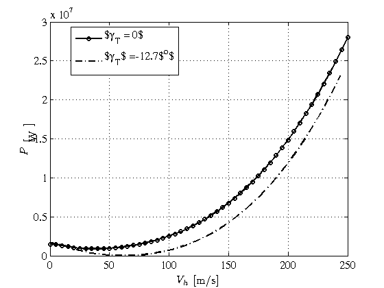 The plot represents how the available power should change as a function the horizontal velocity for a level horizontal flight, gammaT = 0, and descend flight with flight path angle gammaT of -12.7 degrees which corresponds to the angle for ideal autorotation. We can observe that the power curve corresponding to the autorotation flight path angle is tangent to the zero power axis for a velocity modulus of about 60 m/s, which in fact corresponds to vgTmin. To double check this afirmation we plot this value using a red circle as a marker in the previous figure as follows
plot(axps{1},vgTmin,PgTmin,'r o')
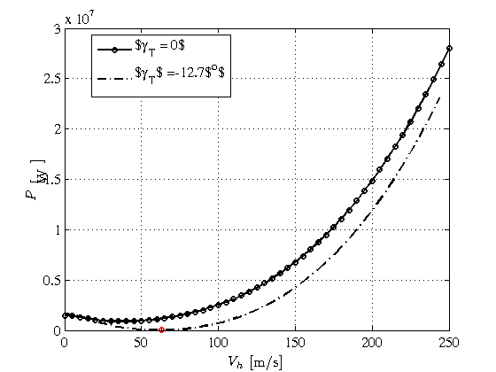 Compute vertical descend power curve
Before computing an ideal autorotation curve we are going first to compute the power curve corresponding to an vertical descend flight, gammaT=-pi/2.
gpi2 = -pi/2*ones(nv,1); fc_gpi2 = getFlightCondition(he,... 'gammaT',gpi2,'V',V,'H',H,'GW',W,... 'Omega',Omega,'Mf',Mf); ps_gpi2 = getEpowerState(he,fc_gpi2,atm,... 'inducedVelocity',@Cuerva);
Now using the previous axes handles we plot the power field of the ps_gpi2 power state as a function of velocity modulus using a blue solid line
plot(axps{1},V,ps_gpi2.P,'b-')
l3 = '$\gamma_T$ = - 90$^0$';
lv = strcat('$V$=',num2str(vgTmin,'%3.0f'),'m/s');
legend(axps{3},{l1,l2,lv,l3},'Location','Best');
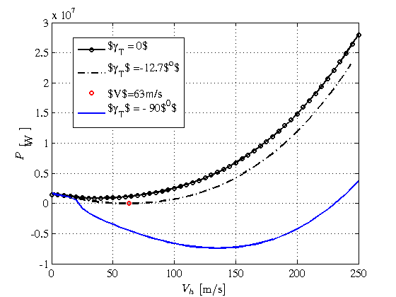 As it can be seen for a horizontal velocity of about 20 m/s the vertical descend power is zero. This comment will be further analised latter.
Computing ideal autorotation power states
To compute an ideal autorotation power state we should specify that the available power is zero. This condition means that the vertical velocity of descend is an unknown to be determined. Therefore, we define the available power, PAT, as
pat = 0.0; PAT = pat*ones(nv,1);
Now in order to get a power state corresponding to imposed power, pat, we first define a vector of horizontal velocities, VH, between 0 m/s and 100 m/s and the corresponding flight condition, fcAT, as follows
VH = linspace(0,100,nv)'; fcAT = getFlightCondition(he,... 'Vh',VH,'H',H,'GW',W,... 'Omega',Omega,'Mf',FM,'P',PAT);
Then, the power state is computed using getEpowerState as before. Because flight condition available power field is specified, getEpowerState knows how to deal with it and computes the needed descend velocity to fullfil the imposed power condition. However, there are two main ways to input available power into getEpowerState. We can specify available power by means of flight condition field or we can set a power plant map. Both ways require to set the energy-based option field constrainedEnginePower. This field can be set to the following values
- 'yes' If constrainedEnginePower is set to 'yes' it means that the power input corresponds to the constrained engine power by transmission limitations. The corresponding engine power map is defined by the value of the field powerEngineMap which by default is the maximum continuos power of the power plant.
- 'no' When constrainedEnginePower is set to 'no' power input is set as before but without considering transmission power limitations.
- 'flightCondition' If contrainedEnginePower is set to 'flightCondition' it means that power input is taken from the available power of the flight condition object.
For this demostration we are going to input the power directly without specifying any engine power map and therefore the constrainedEnginePower option should be set to flightCondition. Then once the power state for ideal autorotation is obtained we can use plotPowerState to plot the autorotation curve. An autorotation curve, or a imposed powered curve, depicts the vertical velocity as a function of horizontal velocity for an imposed level of available power. Therefore we define two axes, x axis is the horizontal velocity as before and now y axis, is the vertical velocity. Furthermore, we can plot also the previously computed value of gammaT, gTmin, that is the flight path angle for which power in vertical descend flight is zero. A flight path angle using these axes represents a line from the origin with slope the value of the flight path angle. More particularly the gTmin is the line from the origin which is tangent to the autorotation curve, as it can be checked in the following figure.
psAT = getEpowerState(he,fcAT,atm,...,... 'inducedVelocity',@Cuerva,... 'constrainedEnginePower','flightCondition'); axdsAT = getaxds('Vh','$V_h$ [m/s]',1); azdsAT = getaxds({'Vv'},{'$V_v$ [m/s]'},1); axVHVV = plotPowerState(psAT,axdsAT,[],'defaultVars',azdsAT); hold on; plot(axVHVV{1},[0,max(VH)*cos(gTmin)],[0,max(VH)*sin(gTmin)],'r-')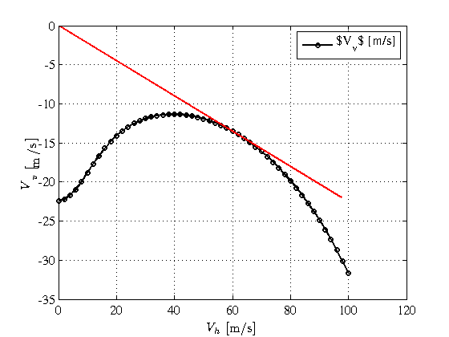
Parametric autorotation power states
In the previous section we have shown how to compute and represent vector power states or vector autorotation states, that is, power states or autorotation states that depend on one variable. In this section we are going to present how to deal with autorotation states depending on two variables. To do this we are going to tackle two practical powered flight condition problems that they are
- Steady autorotation curves for a given vector of rotor speeds
- Steady powered flight conditions for a given vector of imposed available power
Steady autorotation curves for a given vector of rotor speeds
During the initial transient phase of the autorotation manouver the pilot varies the collective pitch to control the angular speed of the main rotor during the autorotation descend. Depending on the value of the rotor speed the autorotation curve changes. Usual attainable rotor speeds could range between 80% and 120% of the nominal rotor speed. To obtain the corresponding flight condition we use as independent variables the previously defined horizontal velocity, VH, and a vector of rotor speeds between 80% and 120% of the nominal rotor speed. The way to use flight condition to take into account the dependency upon the two variables is to construct matrices of two dimensions. Therefore we set the active variables VHij and Omegaij using ndgrid over the corresponding vectors and setting up the rest of flight conditions as two dimension matrices of constant values, and more particularly available power is set to a two dimension matrix of zeros.
no = 5; omega = linspace(0.8,1.2,no); Omegai = omega*OmegaN; [VHij,Omegaij] = ndgrid(VH,Omegai); Wij = GW*ones(nv,no); FMij = FM*ones(nv,no); Hij = hsl*zeros(nv,no); PATij = pat*ones(nv,no);
Now we follow the usual route of using getFlightCondition, then getEpowerState to compute the powered flight condition.
fcATij = getFlightCondition(he,... 'Vh',VHij,'H',Hij,... 'GW',Wij,'Omega',Omegaij,... 'Mf',FMij,'P',PATij); psATij = getEpowerState(he,fcATij,atm,... 'inducedVelocity',@Cuerva,... 'constrainedEnginePower','flightCondition');
Finally, plotPowerState is employed to represent the autorotation state. In order to plot now the power state we have to consider that this particular autorotation state depends on two variables and accordingly we should define x, y and z axes. Axes x and y are the horizontal and vertical velocities as before, and the dependent variable is the angular rotor speed. The function plotPowerState allows to plot two dimensional matrices in two main ways. On the one hand, we can use the surface function plots machinery of matlab, i.e. contour, surfc, etc. On the other hand, we can use x-y axes with several series acting as parameter plot.
To plot angular rotor speed as a function of horizontal and vertical velocities for a given power we use the heroes plot option of plot3dMethod equal to any of the surface plot functions of matlab. Because rotor speed is not a valid field name of power state objects we should add this field to the power state object as follows
azds = getaxds({'Omega'},{'$\Omega$ [rad/s]'},1);
ayds = getaxds('Vv','$V_v$ [m/s]',1);
psATij.Omega = Omegaij;
axATa = plotPowerState(psATij,axds,ayds,'defaultVars',azds, ...
'plot3dMethod',@surfc);
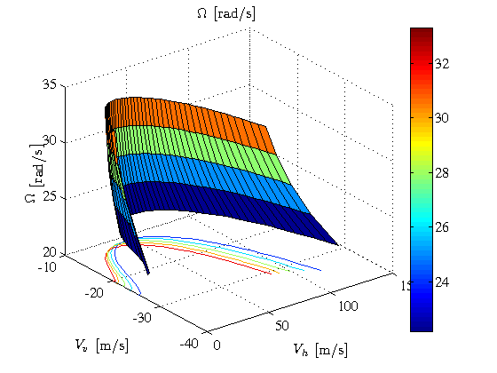 To plot the vertical velocity as a function of horizontal velocity being the rotor angular speed a parameter we set the heroes plot option of plot3dMode to parametric and we define the x axis as the horizontal velocity, the dependent variable is input using defaultVars field, ayds, and the parameter is input as the azds axis data structure.
azds = getaxds('Omega','$\Omega$ [rad/s]',1); ayds = getaxds({'Vv'},{'$V_v$ [m/s]'},1); axATb = plotPowerState(psATij,axds,azds,'defaultVars',ayds, ... 'plot3dMode','parametric');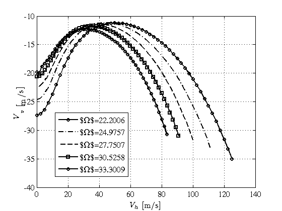
Steady powered flight conditions for a given vector of imposed available power
The second example of how to deal with power states depending on two variables computes vertical velocity for given vectors of horizontal velocities and imposed available power. The ideal autorotation case corresponds to the particular case of zero available power. As before, matrices of two dimensions should be defined as flight condition fields and using ndgrid on the vector of horizontal velocities together with the vector of available power between -1MW and 5 MW the two active variables are set, i. e. horizontal velocity and available power. As previously done the available power is added to the power state object obtained using getEpowerState in order to be plotted by plotPowerState. The selected representation is to show of available power depends on vertical and horizontal velocities using 11 iso-curves of available power
np = 7; PATa = linspace(-1e6,5e6,np); [VHij,PATij] = ndgrid(VH,PATa); Omegaij = OmegaN*ones(nv,np); Wij = GW*ones(nv,np); FMij = FM*ones(nv,np); Hij = hsl*zeros(nv,np); fcATij = getFlightCondition(he,... 'Vh',VHij,'H',Hij,'GW',Wij,... 'Omega',Omegaij,'Mf',FMij,'P',PATij); psATij = getEpowerState(he,fcATij,atm,...,... 'inducedVelocity',@Cuerva,... 'constrainedEnginePower','flightCondition'); ayds = getaxds({'PAT'},{'$P$ [MW]'},1e-6); azds = getaxds('Vv','$V_v$ [m/s]',1); psATij.PAT = PATij; axATd = plotPowerState(psATij,axds,azds,'defaultVars',ayds, ... 'plot3dMethod',@contour, ... 'labels','on',... 'nlevels',11);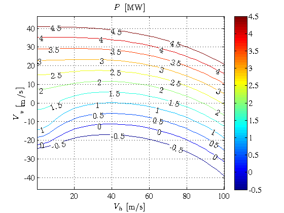
Computing horizontal velocity for maximum vertical velocity
As it can be seen in the above figure, available iso-power contours between -500 kW and 2 MW show that vertical velocity function presents a maximum value. To obtain these maxima heroes toolbox provides the function vH4maxVv. In what follows three available power levels are chosen, -500 kW, 1 MW and 2 MW and the maximum vertical velocity for each available power is computed.
First, flight condition depending on horizontal velocity and available power is defined as before using getFlightCondition and the vertical velocity as a function of these two variables is computed and plotted using getEpowerState and plotPowerState as before
PATx = [-500e3 1e6 2e6]; np = length(PATx); [VHkl,PATkl] = ndgrid(VH,PATx); Omegakl = OmegaN*ones(nv,np); Wkl = GW*ones(nv,np); FMkl = FM*ones(nv,np); Hkl = hsl*zeros(nv,np); fcATkl = getFlightCondition(he,... 'Vh',VHkl,'H',Hkl,'GW',Wkl,... 'Omega',Omegakl,'Mf',FMkl,'P',PATkl); psATkl = getEpowerState(he,fcATkl,atm,...,... 'inducedVelocity',@Cuerva,... 'constrainedEnginePower','flightCondition'); ayds = getaxds('PAT','$P$ [MW]',1e-6); azds = getaxds({'Vv'},{'$V_v$ [m/s]'},1); psATkl.PAT = PATkl; axATd = plotPowerState(psATkl,axds,ayds,'defaultVars',azds, ... 'plot3dMode','parametric');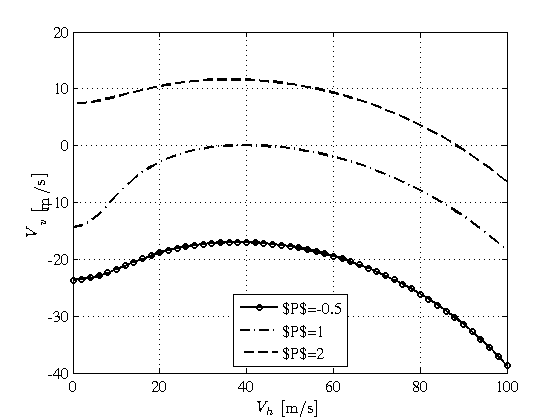
Second, a flight condition for available power vector is defined in such a way that horizontal and vertical velocities are not specified. Then, this flight condition is used to compute the horizontal velocity for which the maximum vertical velocirt is obtained, vHmaxRoc, together with the maximum vertical velocity itself, maxRoc. The function to compute both velocities is vH4maxVv. Finally, using the axes handles of the previous figure, axATd, both velocities are plotted in order to graphically check that they are the maximum values for each available power.
fCm = getFlightCondition(he,... 'H',hsl*ones(size(PATx)),... 'GW',GW*ones(size(PATx)),... 'Omega',OmegaN*ones(size(PATx)),... 'Mf',FM*ones(size(PATx)),... 'P',PATx); [vHmaxRoc,maxRoc] = vH4maxVv(he,fCm,atm,... 'inducedVelocity',@Cuerva,... 'constrainedEnginePower','flightCondition'); plot(axATd{1},vHmaxRoc(:,1),maxRoc(:,1),'r s')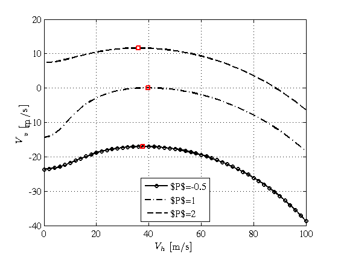
An alternative to compute autorotation power states
In this section we present an alternative way of obtaining the ideal autorotation curve previously computed. heroes toolbox provides the function vGivenPower that computes velocity modulus for a given available power. Using this function by specifying the available power for a given flight path angle the velocity modulus can be obtained. The tricky part of the computation lies in defining properly the modulus velocity guess to compute the actual value of the modulus velocity. The main reason to understand the problem is related to the fact that for a given value of available power the power curve could present two values of velocity modulus for which power is equal to the available power and in order to obtain the desired value we require to input the proper velicity modulus guess. To do this, the heroes toolbox option vFzero can be used to input the proper value of velocity modulus.
Because the intersection of given power with available power curve could provide two different values of velocity modulus the ideal autorotation curve is btained in two parts. The first part corresponds to lower values of velocity modulus for flight path angles between -pi/2 and gTmin. The second part of the ideal autorotation curve is obtained by computing the higher values of velocity modulus for given flight path angles between -pi/2 and gTmin. In order to avoid numerical errrors the limit value of flight path angle is set to gTmin minus some small value like 1e-3 radians.
In what follows the flight condition data is build up using getFlightCondition where it should be underlined that because we are going to compute the velocity modulus this value is not specified.
ng1 = 21; gti = linspace(-pi/2,gTmin-1e-3,ng1)'; Omegab = OmegaN*ones(ng1,1); Wb = GW*ones(ng1,1); Mfb = FM*ones(ng1,1); Hb = hsl*zeros(ng1,1); PATb = pat*zeros(ng1,1); fci = getFlightCondition(he,... 'gammaT',gti,'H',Hb,'GW',Wb,... 'Omega',Omegab,'Mf',Mfb,'P',PATb);
We define the velocity modulus guess to 0, Vi0=0, and we set the option vFzero of energy options to vi0. In this way the function vGivenPower computes the lower values of velocity modulus for which the available power is equal to zero for the given value of flight path angle. Then the horizontal and vertical velocities are computed according to its definition and finally using the ideal autorotation axes handle, axVHVV{1}, we plot the first part of the curve using blue solid line with square markers.
Vi0 = 0; Vi = vGivenPower(he,fci,atm,...,... 'inducedVelocity',@Cuerva,... 'constrainedEnginePower','flightCondition',... 'vFzero',Vi0); vHi = Vi.*cos(gti); vVi = Vi.*sin(gti); plot(axVHVV{1},vHi,vVi,'b-s')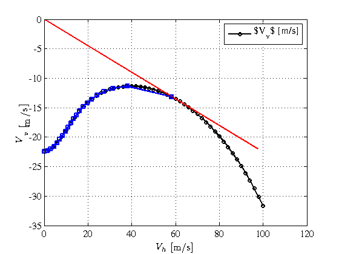
The second part of the curve is obtained by specifying a velocity modulus guess of about 300 m/s because as it is shown in the power curve corresponding to flight path angle equal to -pi/2 the higher value of velocity modulus for which available power is equal to 0 is a value between 200 m/s and 300 m/s. To improve the discretization we increase the number of flight path angles to nv = 51 and we proceed the same way as before. Now, we plot the second part of the ideal autorotation curve using magenta solid line with down triangle markers.
ng2 = nv; gtj = linspace(-pi/2,gTmin-1e-3,ng2)'; PATc = pat*zeros(ng2,1); fcj = getFlightCondition(he,... 'gammaT',gtj,'H',H,'GW',W,... 'Omega',Omega,'Mf',Mf,'P',PATc); vj0 = 300; vj = vGivenPower(he,fcj,atm,...,... 'inducedVelocity',@Cuerva,... 'constrainedEnginePower','flightCondition',... 'vFzero',vj0); vHj = vj.*cos(gtj); vVj = vj.*sin(gtj); plot(axVHVV{1},vHj,vVj,'m-v')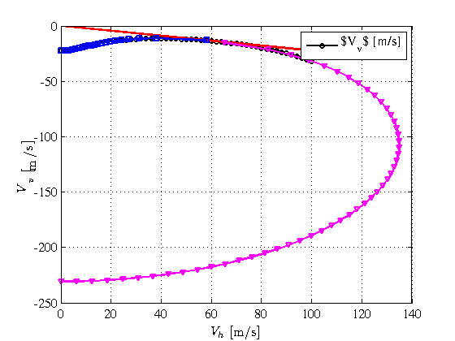
Remarks
This section explain some important remarks to fully understand the process we have followed
- Every energy function used during this demonstration has set the inducedVelocity model to @Cuerva which is a valid induced velocity model not only for ascend flight and windmill state but also for vortex ring state and turbulent wake. Other valid induced velocities model could have been used. Currently heroes toolbox provides @Rand induced velocity model as an alternative way of dealing ascend and descend flights.
References
[1] Alvaro Cuerva Tejero, Jose Luis Espino Granado, Oscar Lopez Garcia, Jose Meseguer Ruiz, and Angel Sanz Andres. Teoria de los Helicopteros. Serie de Ingenieria y Tecnologia Aeroespacial. Universidad Politecnica de Madrid, 2008.